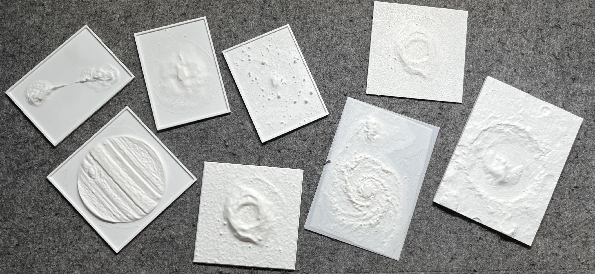
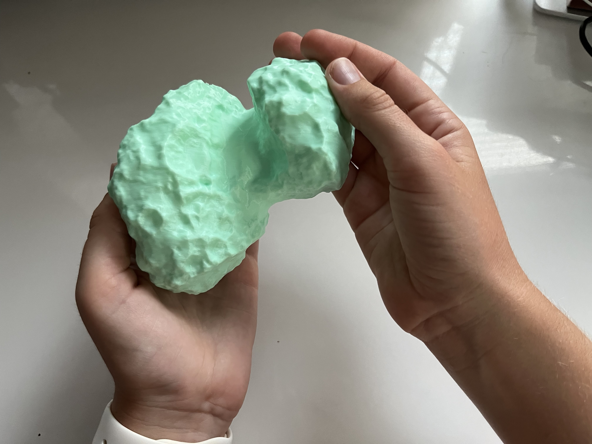
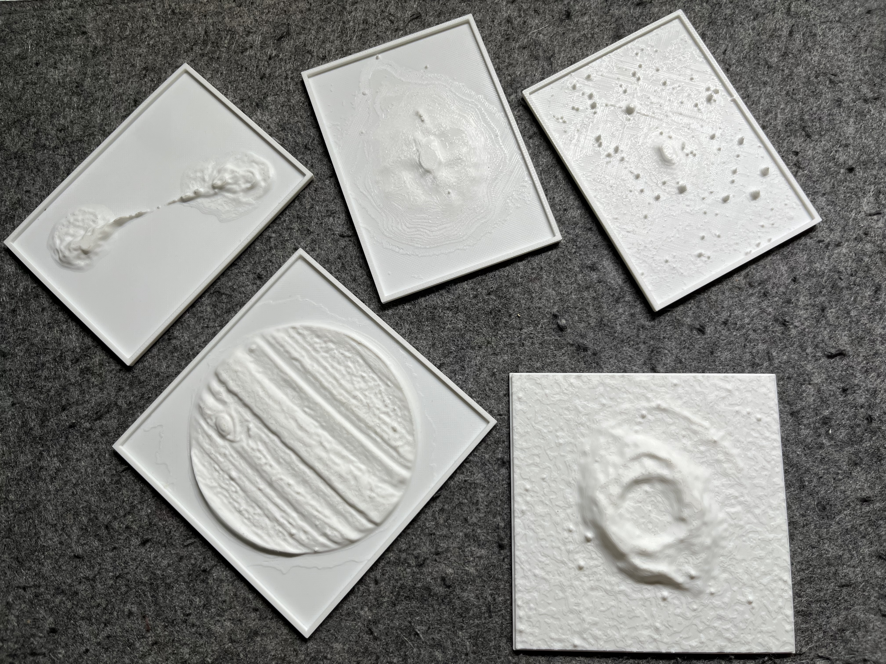
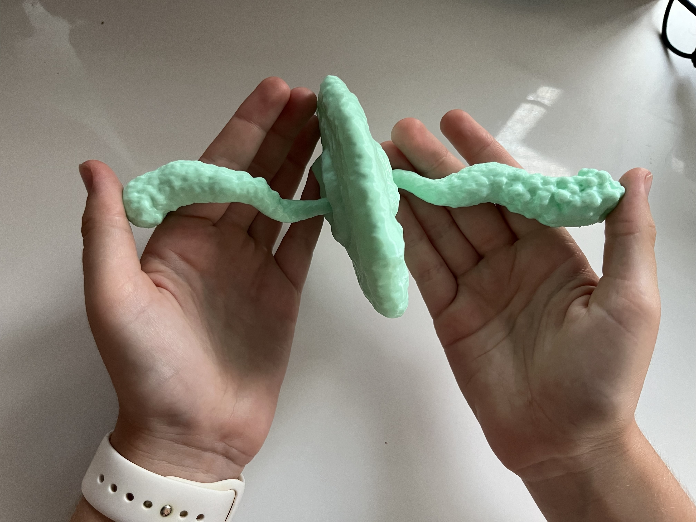

Astronomy for the Blind and Visually Impaired
Making the wonders of the cosmos accessible through tactile data representation and inclusive workshops.
Inspiring the Visually Impaired
Educational workshops and public outreach events using tactile astronomy models to engage individuals with visual impairments.

Tactile Models Gallery


